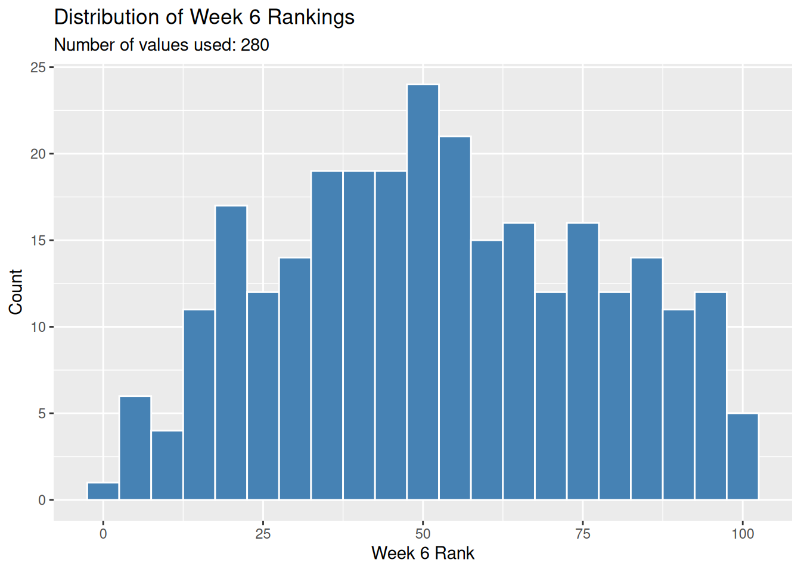
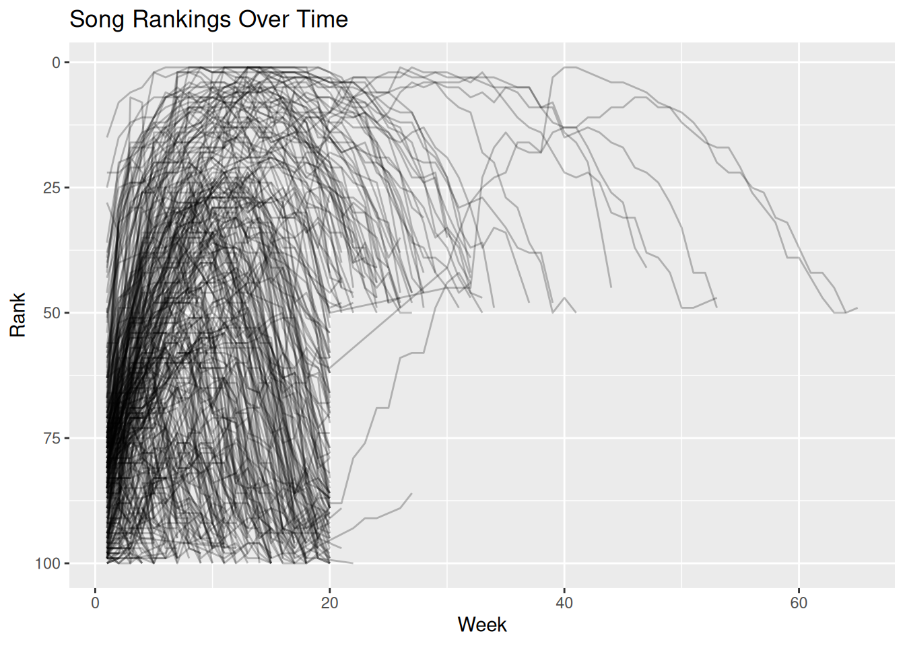
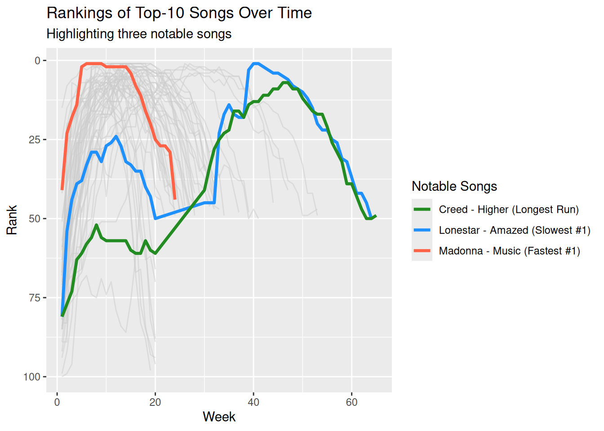
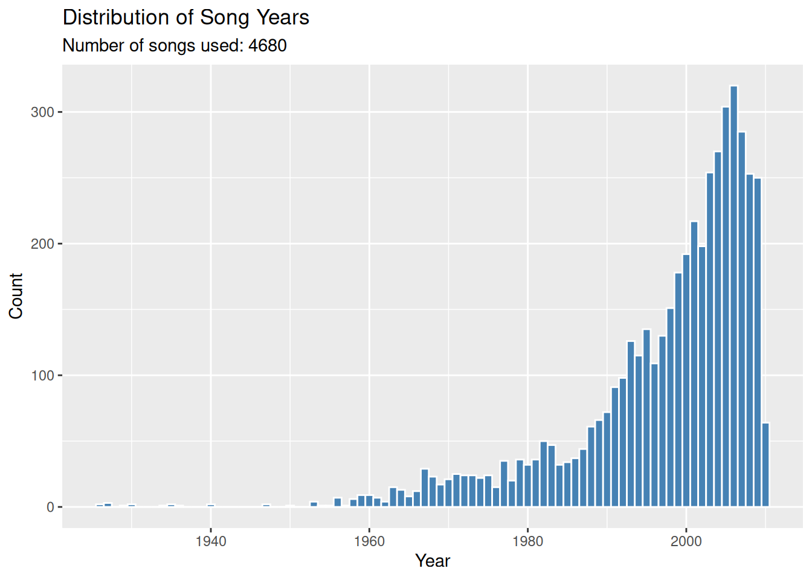
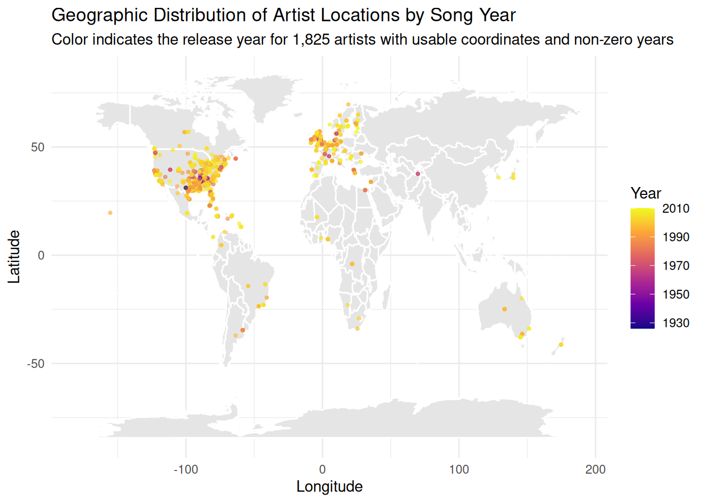

# A tibble: 317 × 7
artist track date.entered wk1 wk2 wk3 wk4
<chr> <chr> <date> <dbl> <dbl> <dbl> <dbl>
1 2 Pac Baby Don't Cry (Keep... 2000-02-26 87 82 72 77
2 2Ge+her The Hardest Part Of ... 2000-09-02 91 87 92 NA
3 3 Doors Down Kryptonite 2000-04-08 81 70 68 67
4 3 Doors Down Loser 2000-10-21 76 76 72 69
5 504 Boyz Wobble Wobble 2000-04-15 57 34 25 17
6 98^0 Give Me Just One Nig... 2000-08-19 51 39 34 26
7 A*Teens Dancing Queen 2000-07-08 97 97 96 95
8 Aaliyah I Don't Wanna 2000-01-29 84 62 51 41
9 Aaliyah Try Again 2000-03-18 59 53 38 28
10 Adams, Yolanda Open My Heart 2000-08-26 76 76 74 69
# ℹ 307 more rowsAnalyzing Music Data
Introduction
This is a Quarto document for analyzing music data.
Warning: Removed 37 rows containing non-finite outside the scale range
(`stat_bin()`).
Missing vs. Present Rankings
# A tibble: 6 × 3
week present missing
<fct> <int> <int>
1 wk1 317 0
2 wk4 300 17
3 wk10 244 73
4 wk20 146 171
5 wk40 7 310
6 wk76 0 317Re-entering Songs
We can check if any songs leave the chart and later re-enter it by comparing the actual number of weeks they were on the chart to the total span between their first and last appearance. If a song’s total span of weeks is greater than the number of weeks it actually had a ranking, it must have left the chart and re-entered.
# A tibble: 2 × 2
re_entered n
<lgl> <int>
1 FALSE 302
2 TRUE 15Song Rankings Over Time
We reshape the billboard dataset to convert the week columns (wk1 to wk76) into a long format with two columns: week and rank. Then, we plot each song’s ranking over time.

Song-Level Summary and Notable Songs
We construct a song-level summary displaying: - First rank: The song’s rank when it entered the chart. - Best rank: The song’s peak rank (minimum rank number). - First week at its best rank: The week it first reached its peak rank. - Total weeks on the chart: The total number of weeks the song remained on the chart.
We then identify three notable top-10 songs: 1. The fastest song to reach #1 (minimum week to reach rank 1). 2. The slowest song to reach #1 (maximum week to reach rank 1). 3. The top-10 song with the longest chart run (maximum total weeks on chart for a song whose best rank was <= 10).
# A tibble: 6 × 6
artist track first_rank best_rank first_week_at_best_r…¹ total_weeks_on_chart
<chr> <chr> <dbl> <dbl> <int> <int>
1 2 Pac Baby… 87 72 3 7
2 2Ge+her The … 91 87 2 3
3 3 Door… Kryp… 81 3 32 53
4 3 Door… Loser 76 55 7 20
5 504 Bo… Wobb… 57 17 4 18
6 98^0 Give… 51 2 7 20
# ℹ abbreviated name: ¹first_week_at_best_rank# A tibble: 1 × 6
artist track first_rank best_rank first_week_at_best_r…¹ total_weeks_on_chart
<chr> <chr> <dbl> <dbl> <int> <int>
1 Madonna Music 41 1 6 24
# ℹ abbreviated name: ¹first_week_at_best_rank# A tibble: 1 × 6
artist track first_rank best_rank first_week_at_best_r…¹ total_weeks_on_chart
<chr> <chr> <dbl> <dbl> <int> <int>
1 Lonest… Amaz… 81 1 40 55
# ℹ abbreviated name: ¹first_week_at_best_rank# A tibble: 1 × 6
artist track first_rank best_rank first_week_at_best_r…¹ total_weeks_on_chart
<chr> <chr> <dbl> <dbl> <int> <int>
1 Creed Higher 81 7 46 57
# ℹ abbreviated name: ¹first_week_at_best_rankHighlighting Notable Top-10 Songs
We filter the dataset to include only songs that reached the top 10 (peak rank <= 10). We display these songs in gray, while highlighting the three notable songs identified in the previous exercise with distinct colors and a legend.

Reading Music Data
We read and print the music.csv dataset using the readr package. According to the dataset documentation, artist.familiarity measures how familiar the artist is to listeners on a scale of 0 to 1, while artist.hotttnesss measures the artist’s popularity on a scale of 0 to 1 at the time of data download (December 2010).
artist.familiarity artist.hotttnesss song.year song.tempo
Min. :0.0000 Min. :0.0000 Min. : 0.0 Min. : 0.00
1st Qu.:0.4676 1st Qu.:0.3253 1st Qu.: 0.0 1st Qu.: 96.96
Median :0.5636 Median :0.3807 Median : 0.0 Median :120.16
Mean :0.5652 Mean :0.3856 Mean : 934.7 Mean :122.90
3rd Qu.:0.6680 3rd Qu.:0.4539 3rd Qu.:2000.0 3rd Qu.:144.01
Max. :1.0000 Max. :1.0825 Max. :2010.0 Max. :262.83 Distribution of Song Years
We plot the distribution of the release years for the songs in the dataset. Note that some songs have their year recorded as 0 in the database; these are filtered out before plotting.

Human-Readable Song Data
We select and print a subset of the dataset containing the most human-readable columns: artist name, location, coordinates (latitude and longitude), genre terms, familiarity, hotness, song title, and year.
# A tibble: 6 × 9
artist.name artist.location artist.latitude artist.longitude artist.terms
<chr> <dbl> <dbl> <dbl> <chr>
1 Casual 0 0 0 hip hop
2 The Box Tops 0 35.1 -90.0 blue-eyed s…
3 Sonora Santanera 0 0 0 salsa
4 Adam Ant 0 0 0 pop rock
5 Gob 0 0 0 pop punk
6 Jeff And Sheri … 0 0 0 southern go…
# ℹ 4 more variables: artist.familiarity <dbl>, artist.hotttnesss <dbl>,
# song.title <dbl>, song.year <dbl>Counting Placeholder Values
Many columns in the dataset use placeholder values (typically 0 for numeric columns) to represent missing data. We count the number of placeholder values (0) in each of the selected columns:
# A tibble: 6 × 2
column placeholder_count
<chr> <int>
1 artist.location 9999
2 release.name 9989
3 song.title 9992
4 song.year 5320
5 artist.familiarity 24
6 artist.hotttnesss 496Artist Locations Map
Only 3,742 out of 10,000 artists have usable location coordinates, while the remaining 6,258 have placeholder coordinates of (0, 0), which makes mapping them impossible.
# A tibble: 2 × 2
coordinate_status count
<chr> <int>
1 placeholder 6258
2 usable 3742
Attaching package: 'maps'The following object is masked from 'package:purrr':
map